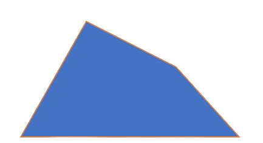

Informações sobre o Trapézio Irregular:
Um trapézio irregular é um quadrilátero que possui pelo menos um par de lados paralelos, mas os outros dois lados não são necessariamente paralelos. Portanto, suas medidas laterais e ângulos internos podem variar, resultando em formas diversas. A área de um trapézio irregular pode ser calculada usando a fórmula que envolve a média das medidas das bases multiplicada pela altura perpendicular às bases.